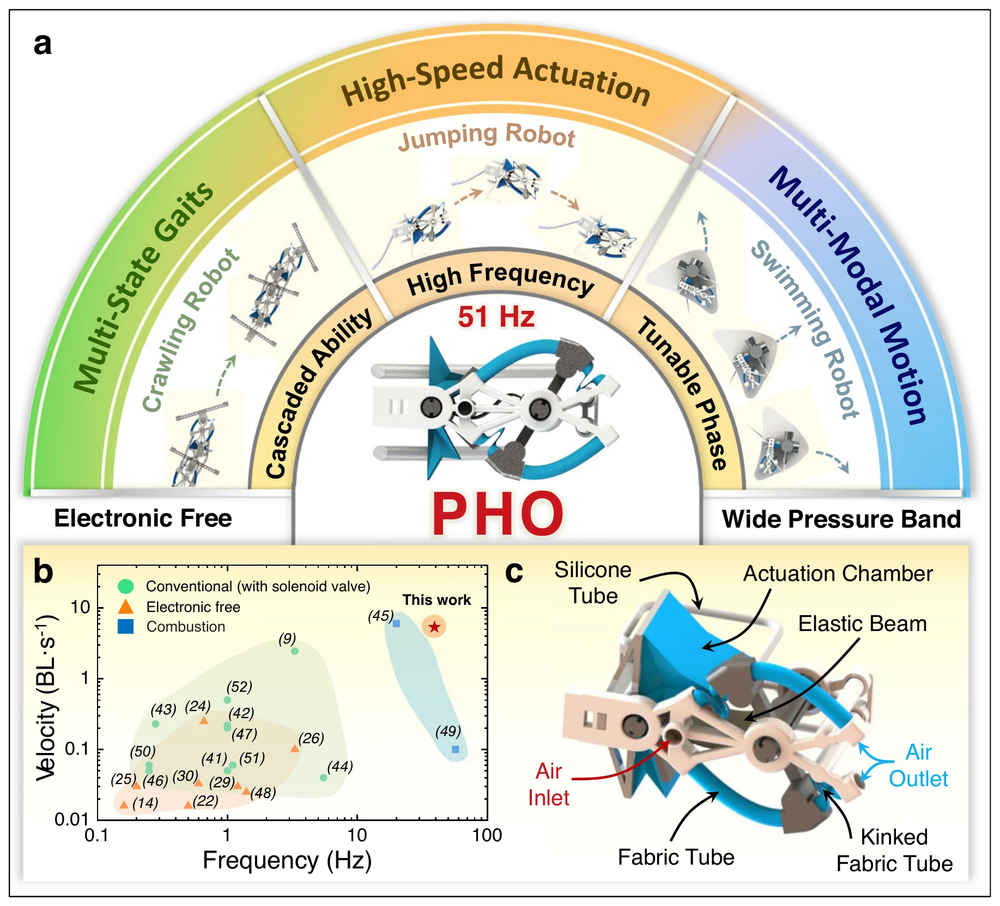
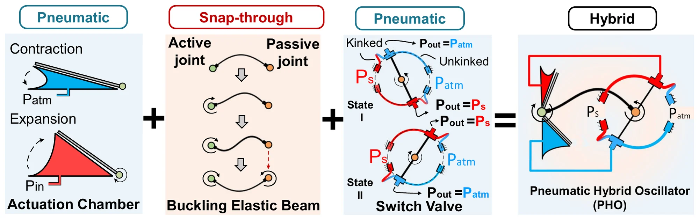
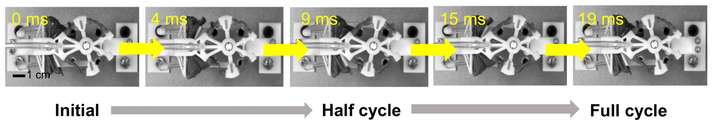
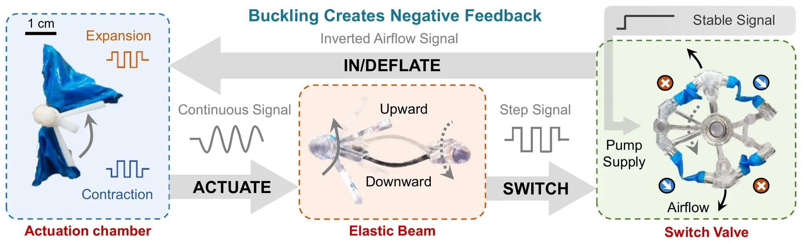
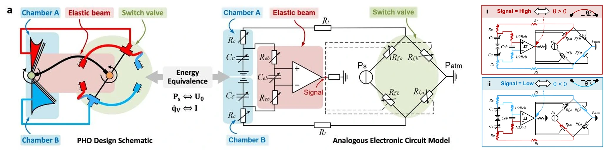
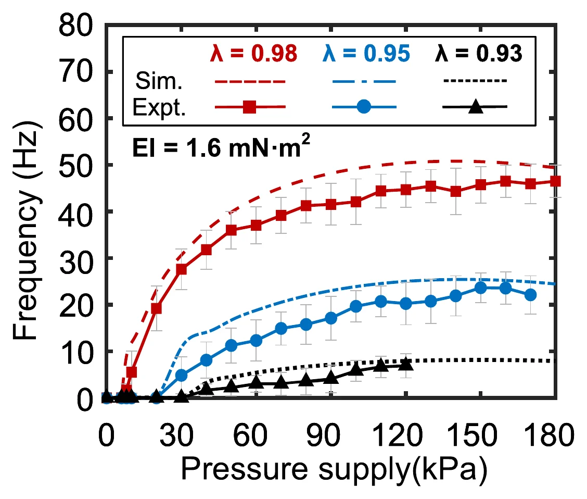
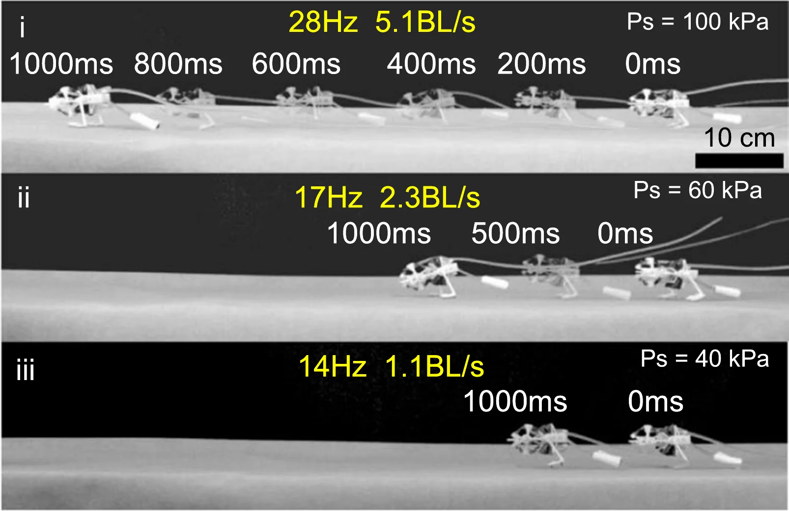
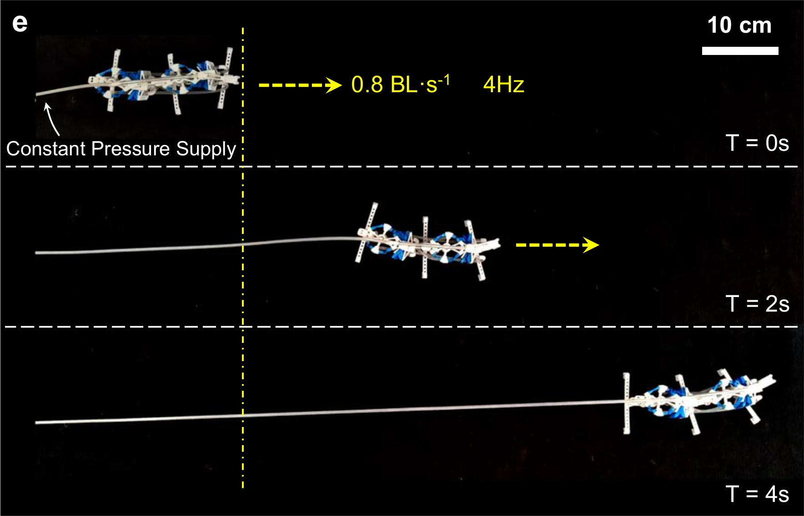
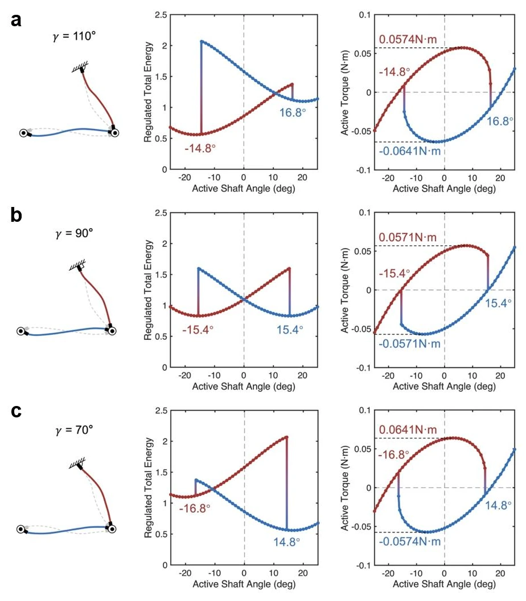
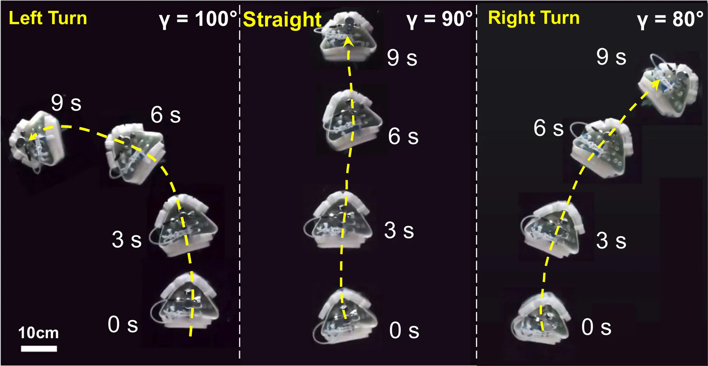

The idea
Snap-through + kinked tube
achieves negative feedback self-oscillation.
Two fabric chambers, a carbon-fiber beam and a switch valve turn a constant air supply into a back-and-forth rotation, up to 51 Hz.
The beam snaps between its two stable shapes in 9 ms, and each snap flips the valve, which sends the air to the other chamber. No microcontroller or solenoid valve is involved. The same oscillator drives a jumping robot modeled on a kangaroo, a crawling robot built from two linked oscillators, and a swimming robot with tunable phases.
01 / Why a pneumatic oscillator
Rhythm
without electronics.
Why build a robot's clock out of air?
Birds flap their wings, kangaroos swing their legs and fish beat their tails: periodic motion is how many animals move. Robots that copy these motions need a periodic drive, and many rely on electronics for it, with continuous power and a clock signal. That makes them bulky and complex, and limits them where electromagnetic fields are strong or electricity is scarce.
Pneumatic oscillators built from soft, non-electrical logic gates turn a constant pressure into a periodic output without any electronics. Until now they have been slow: the fastest that also drives motion reached 15 Hz, and designs that save energy with bistable parts stayed at or below 3.3 Hz. When they are chained in a ring, the ring must have an odd number of oscillators, and in most existing designs the phase cannot be tuned.
This oscillator reaches 51 Hz, links in any number, and its phase can be set.

02 / Working principle
Soft, elastic,
rigid.
How does a constant pressure become a 51 Hz beat?
The oscillator joins three parts of very different stiffness. Two fabric chambers, one on each side, turn the active joint: the fabric, 0.16 mm thick, bends easily but does not stretch, so the pressure goes into turning the joint rather than into stretching the material. A carbon-fiber beam, 0.3 mm thick, links the active joint to a passive joint at its other end. The beam is bistable: as the active joint turns, it bends further and stores energy, until it snaps through to its other stable shape.
The snap flips a rigid rocker on the passive joint. The rocker belongs to a switch valve with four fabric tubes, two of them pinched shut at any moment. When it flips, the tube that was feeding one chamber is pinched, that chamber empties to the air, and the other chamber starts to fill and turns the joint back. This repeats for as long as air is supplied. Because the active and passive joints move out of phase, the beam does not jam during a snap.

Chambers turn the joint
Air fills one fabric chamber, which turns the active joint and bends the beam.
Beam snaps
The carbon-fiber beam snaps through to its other stable shape, in 9 ms.
Rocker re-routes air
The rocker flips, pinching one tube and opening another, so the other chamber fills.
In the real oscillator, the rigid parts are 3D-printed. A high-speed camera filming at 1000 frames per second shows the beam snapping through in 9 ms and a full cycle taking 19 ms, which is 51 Hz. The oscillator kept running for more than 3 million cycles without a significant loss of performance.

See the real parts in the loop

03 / Frequency model
A frequency
you can design.
Can we predict how fast it will oscillate?
The authors model the oscillator as an electrical circuit. Each chamber acts as a capacitor that stores pneumatic energy; the beam as a capacitor joined to a comparator that flips state when the beam snaps; and the valve as a pair of resistances that switch between high and low. Further resistances stand for the losses in the chambers, the beam and the tubes. The model predicts the oscillation frequency from the supply pressure and the beam's design: its normalized length λ, the assembled length divided by the original length, and its bending stiffness EI.

Nine oscillators, with λ from 0.93 to 0.98 and EI from 0.9 to 2.3 mN·m², were tested against the model. Their frequency rises roughly logarithmically with pressure up to about 80 kPa, then levels off and peaks at about 120–150 kPa, because at high pressure the soft valve partly blocks the airflow. A stiffer beam needs more torque to snap, which lowers the frequency; a beam with both a low λ and a low stiffness weakens the valve's blocking, and the oscillation stops early at high pressure.
With λ = 0.98 and EI = 1.6 mN·m², the oscillator reached 51 Hz: 3.3 times the fastest earlier oscillator that drives motion, and 15 times a bistable ring oscillator. It works with supply pressures from 8 to 180 kPa.


04 / Jumping robot
A 5.1 BL/s speed
kangaroo.
What does a fast oscillator do for a legged robot?
A kangaroo reaches 8 body lengths per second with rapid swings of its feet. The kangaroo-inspired robot fixes a two-legged frame to the oscillator's active joint. Backward-angled nails on its feet grip harder in one direction than the other, and a flexible tail keeps it balanced. Like the animal, it moves in three phases: pushing, taking off and landing.
The supply pressure sets the oscillator's frequency, and with it the robot's speed. At 100 kPa the robot runs at 28 Hz and reaches 5.1 body lengths per second (5.1 BL/s, 68 cm/s), more than twice the speed of pneumatic robots that use electromagnetic valves. It can be driven at up to 36 Hz, but above about 28 Hz it stays in the air longer and completes several motion cycles mid-air, so it gets no faster. The fastest leg mounting angle was β = 100°, and the robot weighs 30 g.

05 / Crawling robot
Oscillators that
keep step.
Can oscillators coordinate a gait without a controller?
A robot with several legs needs its actuators to move in sequence. Without electronics this has been hard: ring oscillators work only with an odd number of actuators, and fluidic relaxation oscillators, which are not bistable, lose more energy.
Here two oscillators are linked in a loop, the outlets of each one's valve feeding the chambers of the other, so each oscillator's chambers are driven by its partner's valve and the two take turns. Within one oscillator, the two chambers fill half a cycle apart; on the same side, the chambers of the two oscillators fill a quarter of a cycle apart. Linking them takes no change to the oscillators, only to the tubes, so in principle any number can be linked; the authors also ran a loop of three.
In the crawling robot, the active joint of one oscillator is fixed to the body of the other, whose passive joint drives the front leg. Each oscillator has a pair of feet with sharp, backward-angled corners. The gait cycles through four states, and the robot crawls at 0.8 BL/s with its oscillators at 4 Hz. Among the pneumatic crawlers the authors compare, including some with wheels and electric valves, it is the fastest.

06 / Swimming robot
Phase Tuning
by constraints adjustment.
How do you steer a robot with no controller?
Changing a robot's course usually means changing its stroke, which takes a microcontroller. Here the oscillator's phase is set mechanically. An auxiliary beam is pinned to the passive joint at one end and clamped at a fixed angle γ at the other. At γ = 90° it bends the same way in both directions, and the active joint takes as long to swing one way as the other (T1 = T2). Clamped above or below 90°, it adds a different torque in each direction, so one swing takes longer than the other.
One oscillator with its auxiliary beam clamped at three angles; each inset plots the active joint's angle over time.
Why does the clamp angle shift the phase? The authors extend their beam model to the main beam and the auxiliary beam in series, joined at the passive joint, and compute the energy stored in the beams and the torque needed on the active joint as it turns. At γ = 90° the two snaps mirror each other: the beam snaps at ±15.4° and needs 0.0571 N·m in each direction. At γ = 110°, the snap one way needs 0.0641 N·m and releases more energy, while the snap back needs 0.0574 N·m; at 70° the two swap. A chamber has to fill for longer to reach the larger torque, so the two half-strokes take different times. Both torques are above the symmetric value, so moving γ away from 90° also lowers the frequency, while the snap angles shift by less than 1.5°, so the stroke stays nearly the same.

The swimming robot carries a phase-tunable oscillator, a CO₂ gas cylinder as its air supply, a fin on the active joint and a 3D-printed container for buoyancy, so it needs no tether. A clamp on the auxiliary beam serves as a knob for setting γ by hand. At γ = 90° the robot swims straight, oscillating at 2.3 Hz, at 0.6 BL/s on about 50 kPa; at 100° it turns left and at 80° right, both at 2 Hz and 0.5 BL/s. At γ = 110° it turns through more than 180° within a radius of 260 mm, less than 1.5 body lengths.

Questions & answers
Common questions.
Why not use solenoid valves?
Solenoid valves and a microcontroller need continuous electrical power and a clock signal, which makes a robot bulky and complex and limits it in strong electromagnetic fields or where electricity is scarce. The oscillator needs only a constant pressure supply. Even so, the jumping robot runs more than twice as fast as pneumatic robots that use electromagnetic valves.
What sets the frequency?
The supply pressure and the beam: its normalized length λ and its bending stiffness EI. The frequency rises with pressure up to about 80 kPa and peaks at about 120–150 kPa, where the soft valve starts to block part of the airflow. A stiffer beam needs more torque to snap and lowers the frequency. The circuit model predicts these trends.
Why “hybrid”?
Because it combines three levels of stiffness. Fabric that bends but does not stretch puts the pressure into rotation; the purely elastic carbon-fiber beam snaps in 9 ms; rigid 3D-printed parts carry motion and force efficiently. The authors call this a soft-elastic-rigid coupling.
How many oscillators can be linked?
In principle any number. Linking needs no change to the oscillators, only different tube connections, whereas ring oscillators need an odd number of stages. The paper shows two oscillators driving the crawling robot and a loop of three on a breadboard.
Does the swimmer steer itself?
No. The angle γ of the auxiliary beam is set by hand, with a clamp that serves as a knob, and the robot then keeps the course that γ sets. It carries its own CO₂ cylinder, so it needs no tether.
Paper & authors
Soft, elastic and rigid,
in one oscillator.
A non-electrical pneumatic hybrid oscillator for high-frequency multimodal robotic locomotion
Genliang Chen†*, Yongzhou Long†, Siyue Yao, Shujie Tang, Junjie Luo, Hao Wang, Zhuang Zhang*, and Hanqing Jiang*.
† Equal contribution. * Corresponding authors: Genliang Chen, Zhuang Zhang and Hanqing Jiang.
Nature Communications, volume 16, article 1449, 2025. Received 15 August 2024; accepted 25 January 2025; published online 7 February 2025.
Citation / BibTeX
@article{chen2025oscillator,
title = {A non-electrical pneumatic hybrid oscillator for high-frequency multimodal robotic locomotion},
author = {Chen, Genliang and Long, Yongzhou and Yao, Siyue and Tang, Shujie and Luo, Junjie and Wang, Hao and Zhang, Zhuang and Jiang, Hanqing},
journal = {Nature Communications},
volume = {16},
number = {1},
pages = {1449},
year = {2025},
publisher = {Springer Science and Business Media LLC},
doi = {10.1038/s41467-025-56704-1}
}Full affiliations
- State Key Laboratory of Mechanical Systems and Vibration, Shanghai Jiao Tong University, Shanghai, China
- Shanghai Key Laboratory of Digital Manufacturing for Thin-Walled Structures, Shanghai Jiao Tong University, Shanghai, China
- Meta Robotics Institute, Shanghai Jiao Tong University, Shanghai, China
- Academy for Engineering and Technology, Fudan University, Shanghai, China
- School of Engineering, Westlake University, Hangzhou, Zhejiang, China
- Research Center for Industries of the Future, Westlake University, Hangzhou, Zhejiang, China
Supplementary movies
Watch all ten movies.
Movies 1–4 show the oscillator in renders and animations, Movie 5 films it at 51 Hz, and Movies 6–10 show the three robots and the phase tuning.
Supplementary Movie 1: Design of the pneumatic hybrid oscillator (PHO). A render of the oscillator turning, then its parts labelled one by one.
Supplementary Movie 2: Animation demonstration of the PHO. The airflow through the chambers and the valve, the rocker's switch and the snap-through, half a cycle at a time and then in full cycles.
Supplementary Movie 3: Snap-through buckling behavior of the elastic beam. The beam between its two joints, its snap-through, and plots of torque, elastic energy and the two joint angles.
Supplementary Movie 4: Working principle of the PHO. A schematic of the chambers, the beam and the valve: each chamber fills in turn as the valve switches.
Supplementary Movie 5: High-frequency oscillation of the PHO. Under violet light, the frequency climbs to 51 Hz as the pressure rises to 180 kPa; then the oscillation at 30× slow motion.
Supplementary Movie 6: High-speed kangaroo robot. The robot held by hand with its legs swinging, then three runs at 14, 17 and 28 Hz, in real time and in 8× slow motion.
Supplementary Movie 7: Cascaded-loop crawling robot. The robot from above, crawling in real time and in 4× slow motion.
Supplementary Movie 8: Cascade-loop of three PHOs. A schematic of the loop, then the three oscillators on a breadboard in real time and in 4× slow motion.
Supplementary Movie 9: Phase tunability of the PHO. The oscillator with its auxiliary beam at γ = 90°, above 90° and below 90°.
Supplementary Movie 10: Course-tunable untethered swimming robot. The robot and its parts, the valve opened by hand, the fin flapping, then five runs in a tank at γ = 110° to 70°.